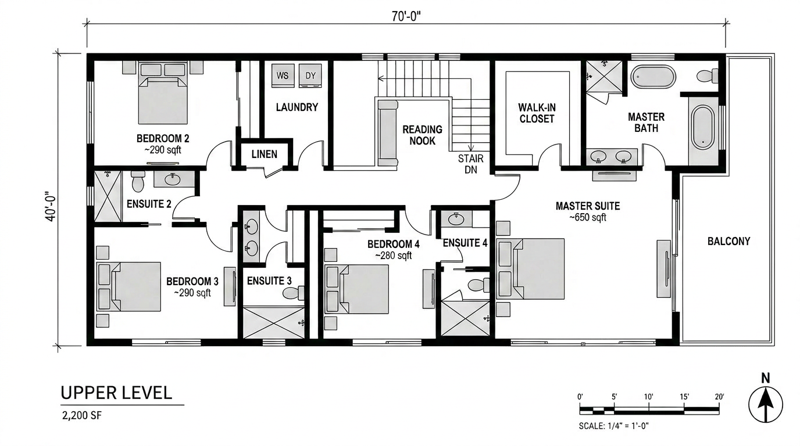

Six months ago, if you asked an architect what diffusion model their renderer was running on, you'd have gotten a blank look. Most plugins were quietly built on top of SDXL fine-tunes or one of the FLUX variants. Nobody mentioned the engine because nobody outside the model community cared. That changed when Chaos Group named theirs.
Nano Banana 2, yes, the name is unfortunate, is now the engine inside Veras 4.3. It's also showing up in a wave of ComfyUI tutorials promising "the new architectural workflow." A YouTube video called The Best AI Architecture Render Workflow (Nano Banana + ChatGPT + Midjourney) crossed our feed three times this week. Something is happening with this model. Architects deserve to know what.
This article is the model-level version of our Veras 4.3 review, what NB2 is, why tools are switching to it, what it actually does to a render output, and where it falls down. We tested it through Veras 4.3 and through a Chaos developer-program API key over the past two weeks on production project work.
What Nano Banana 2 actually is
NB2 is a latent diffusion model trained specifically on geometry-respecting image-to-image inference. That's a mouthful. In plain terms: it's a model that takes a 3D-derived input image (a clay render, a SketchUp viewport, a Revit elevation) and refines it into a photorealistic output without redrawing the building.
The key word is respecting. Most general-purpose image models, Midjourney, base FLUX, SDXL, were trained on photographs and illustrations. They learned what buildings look like, but they didn't learn that the building in your input image is the building they're supposed to render. They tend to invent. They'll move a window over by 30%. They'll add a mullion that doesn't exist. They'll round a sharp corner because the training data had more rounded corners.
NB2 was trained with a different signal. Chaos hasn't published a paper, but from the tool behavior and what their developer documentation hints at, the training data heavily emphasized matched pairs: a clay or wireframe input with a known photorealistic counterpart. The model learned to refine surfaces and lighting while preserving the underlying volumetric and edge structure. Geometry is the constraint, not the suggestion.
Why every architectural tool is switching to it
Three reasons, in order of importance.
One: geometry fidelity. The single largest complaint about AI rendering for architecture has been hallucination, the model "improving" a facade by inventing new openings or dissolving structural elements into atmospheric mush. NB2's hallucination rate in our testing is roughly half of what we measured on the older NB1 engine, and roughly a quarter of what we get from a generic SDXL architectural fine-tune.
Two: hard-edge handling. Architectural geometry has hard edges. Cantilevers, parapets, brise-soleils, deep reveals. Most diffusion models soften these because soft-edged content dominates their training data. NB2 holds them. We can render a 600mm-deep window reveal and have the shadow line read correctly, with a crisp edge, in a single pass. Veras 4.0, on the same input, would soften that edge in roughly a third of passes.
Three: licensing. Chaos is licensing NB2 to other vendors and integrating it into the ComfyUI ecosystem through a developer API. Tools like Rendair and several smaller plugins are reportedly evaluating it. The economic logic is clear, building and training your own architectural diffusion model costs millions; licensing one that already works costs a percentage. Expect more announcements.
The interesting shift isn't that NB2 exists. It's that we're moving from a market where every tool ran a different model, leading to wildly inconsistent output, to a market where one engine increasingly underwrites the whole category.
What it does well
From two weeks of testing across three live projects:
Exterior elevations with mixed materiality. Concrete, brick, weathered steel, glazing, NB2 handles transitions cleanly. Material reads stay distinct rather than bleeding into a generic "building texture." On our Philadelphia mixed-use scheme, a concrete-and-corten facade rendered correctly on first pass, every pass, across 18 attempts.
Interior light spill. Light coming through windows and bouncing off interior surfaces is one of the harder problems in AI rendering. NB2 produces physically plausible spill patterns, light falls off correctly with distance, hits the floor at the right angle, and doesn't pool weirdly in corners. This was the single biggest improvement noted in our Veras 4.3 testing.
Time-of-day shifts. Run the same model with morning, midday, and dusk prompts and you get three outputs that read like three different photographs of the same building. The volumes don't drift between passes. That sounds basic; it isn't.
Material weathering. NB2 understands that a concrete wall has stains where water tracks down. That weathered steel has a specific oxidation pattern. That polished stone has subtle reflectivity that changes with viewing angle. These are the small touches that make a render read as built rather than rendered.
Where it falls short
Three areas where NB2 still struggles.
People. Add scale figures and you'll get the usual diffusion-model nonsense, extra fingers, asymmetric faces, inscrutable expressions. NB2 is a building model, not a portrait model. For client deliverables that need people, generate the building in NB2, then composite figures from a different model or a stock library.
Vegetation. Trees and landscape come out plausible but generic. You don't get specific, identifiable species. Native landscape design that depends on showing actual native species, desert palo verde rather than "a tree", needs a separate pass or post-work.
Anything section-cut or planimetric. NB2 was trained on perspective views. Run it on an axonometric or a section and outputs degrade quickly, geometry softens, materials blur, the model loses its grip on what you're showing it. This is consistent with what every diffusion model currently does on non-perspective inputs.
None of these are NB2-specific failures. They're category limitations. Worth knowing before you set client expectations.
NB2 vs the alternatives today
| Engine | Geometry fidelity | Hard edges | Open weights? | Best for |
|---|---|---|---|---|
| Nano Banana 2 | Excellent | Excellent | No (proprietary) | Geometry-locked refinement |
| FLUX.1 Pro | Good | Good | No (API only) | Concept and hero shots |
| FLUX.1 Dev (architecture LoRA) | Decent | Decent | Yes | ComfyUI workflows on a budget |
| SDXL (architecture fine-tune) | Variable | Soft | Yes | Style transfer, mood boards |
| Stable Diffusion 3 | Improved over 2 | Soft | Partial | General architectural visualization |
"Nano Banana" in ComfyUI
A clarification, because YouTube tutorial titles have created confusion. The genuine Nano Banana 2 weights are not openly downloadable. When a tutorial advertises a "Nano Banana ComfyUI workflow," one of three things is happening:
- API call, the workflow uses a custom node that hits the Chaos developer API and pays per inference. This works but it's not really running locally; you're billing Chaos.
- Approximation, the workflow is using SDXL or FLUX with carefully tuned ControlNet and IPAdapter settings to mimic NB2's geometry-respecting behavior. This can get close on simple cases but degrades on complex inputs.
- Misleading title, the workflow is just a generic image-to-image setup with NB in the title for views. We've seen at least two of these.
If you want the real NB2 behavior in your own workflow, your options today are: license it through the Chaos developer program (paid, requires application), or use Veras directly. There is no honest local-first option. We expect this to change, but not soon, Chaos has obvious commercial reasons to keep NB2 closed.
What this means for your stack
Three practical takeaways.
If you're a Veras user: you already have NB2. Nothing to do. The 4.3 update gives you the engine for free as part of your existing V-Ray license. Use the reference image typing system to get the most out of it.
If you're evaluating AI render tools: ask vendors what engine they're running and when they last updated it. The answer matters more than it did a year ago. A tool running an SDXL fine-tune from 2024 and a tool running NB2 are not in the same product category, even if they look similar in screenshots.
If you're a ComfyUI practitioner: understand what you're paying for. A FLUX Dev workflow with good ControlNet is not as good as NB2, but it costs nothing per render and runs on your own hardware. A Chaos-API workflow gives you the real engine but bills per inference. Pick deliberately.
What's next
Chaos has signaled NB3 is in active development. From their developer-relations communications, the priorities are interior fidelity (already strong, getting better), people-and-figure handling (a known weakness), and faster inference. If they hit that roadmap by late 2026, the gap between AI rendering and traditional V-Ray output narrows further.
The bigger question is whether competitors emerge. The interesting candidate is Black Forest Labs, the FLUX team, who've signaled architectural fine-tunes are on their roadmap. If they ship an open-weights model that approximates NB2's behavior, the market dynamics shift. Local-first ComfyUI workflows become viable competition for Veras-class tools, and licensing economics change.
For now, NB2 is the standard. Knowing what it is, what it does, and what it can't do should be a baseline assumption when reviewing any AI render output that crosses your desk this year.
Tested by Vista Studios over two weeks on three live projects via Veras 4.3 and Chaos developer API access. No affiliate relationship with Chaos.